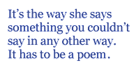

I first met Ann Drysdale far too many years ago in Poole in Dorset. I can’t remember much about Poole except that my young daughters like it, so it must have been full of clothes shops. Ann and I were not buying clothes, neither of us being particularly expert in that line. We were reading poems, our poems, for our publisher, the great and good Harry Chambers who founded and ran Peterloo Poets for many years and published many books for Ann and me — and also for plenty of other people, including the late U.A. Fanthorpe. Ursula was reading on this occasion, giving one of those lovely readings with her partner Rosie Bailey which we shall miss so much. In fact I can remember their reading, but neither mine, nor Ann’s.
What I can remember is eating chips out of a bag, sitting on a flight of steps. The chips were good and Ann’s conversation was distinctive and funny, as it always is, but remember: I had never met her before, nor read any of her poems. I can count on the shelf behind me, one, two, three, four of her books. I could have sworn I had a fifth but her books are the sort you lend out and therefore the sort you don’t always get back. Each one is decorated with a picture by Beryl Cook, and I somehow think of Ann as a kind of Beryl Cook in verse, but that is not entirely just.Ann is no sort of a primitive, warbling native woodnotes wild. She is a poet who knows all about the technical business of rhyme and metre and she is much more unforgiving of lapses in, say, scansion, than I am, which is one reason I so often run a new poem past her. She picks up on things I am rather too inclined to let go by, and always suggests an emendation which is better. I try to do the same for her but I can never think of anything that will make a verse of hers better.
Not that I like equally everything she writes. You see, the thing about Ann’s poems is how various they are. She does one thing, and then another thing, and then, Lord above, she does a third thing. Perhaps that’s not the way to fame and fortune. The way to fame and fortune is to do one thing and then to do the SAME thing, and then to do it over and over again until the connection is made. You are the person who does THAT. And so to your fifteen minutes fame, or even more, a bloody lifetime.
I have read a lot of Ann’s prose works (and very readable they are too), so I know a good deal about her life, her pigs, her dogs and other more important things. We exchange emails regularly. We occasionally speak on the phone, though I think we both find that instrument not altogether conducive to communication — perhaps we were born too soon. And we have met in London, with the great Harry Chambers making up a third. In these cases it can be that alcohol is consumed, quite a lot and some very good food too on one occasion, the antithesis of Kit Wright’s fine book of poems Short Afternoons. These were long afternoons, good afternoons finishing up at railway stations, Charing Cross for me and for them the noble edifice of Paddington and God’s Wonderful Railway to the west.
We have never met at home base. Ann has never seen my Canterbury mansion. I have never seen her Welsh fastness. But Deal now: we have met at Deal to give poetry readings, and Dover, to give poetry workshops. We do good work together, Ann and I. I have a series of exercises in wordplay to suitably exhaust participants, Ann talks to them, one on one, seriously about their work, about what they meant to do and what they actually did do. She tells it how it is. I don’t. I tell people (mostly) what they want to hear. Is that the difference between me and her? Or, more interestingly, more theoretically, as it were, the difference between men and women, the big bow-wow style, the square of ivory? Well, I’m not as nice as Walter Scott and Ann is more generally forgiving than Jane Austen. We’ve been on walks through the Kent countryside, but I suspect Ann’s would be longer and of course the Welsh landscape is rougher and wetter. Also I don’t care for dogs. They bite or they might bite.
Ann doesn’t bite. One of the characteristics of her poetry, I mean once you’ve got past the proficiency and the wit, is its kindness. Are men kind? Well, we can be of course, but it isn’t what we DO.
And the other thing about it is the thing with all poets worth a damn. It’s the way she says something you couldn’t say in any other way. It has to be a poem. And the poem skewers the meaning, just like that. Even if you aren’t quite sure what that meaning is. This is “Riverstation”, nice and short, short enough to learn, short enough to remember:
The dog on the barge and the light on the river
And things understood and things unspoken
And the thought that this could go on forever —
The dog on the barge and the light on the river;
That if only I were sufficiently clever
The surface tension would stay unbroken,
The dog on the barge and the light on the river
And things understood and things unspoken.
John Whitworth
June 2009
John Whitworth is oldish, fattish, baldish. His tenth book of poems Being the Bad Guy was published by the great and good Harry Chambers in Cornwall. Les Murray likes it and so should you. John has recently read his verses to the wild acclaim of a good segment of the population of Texas and gained uncounted dollars therefrom.